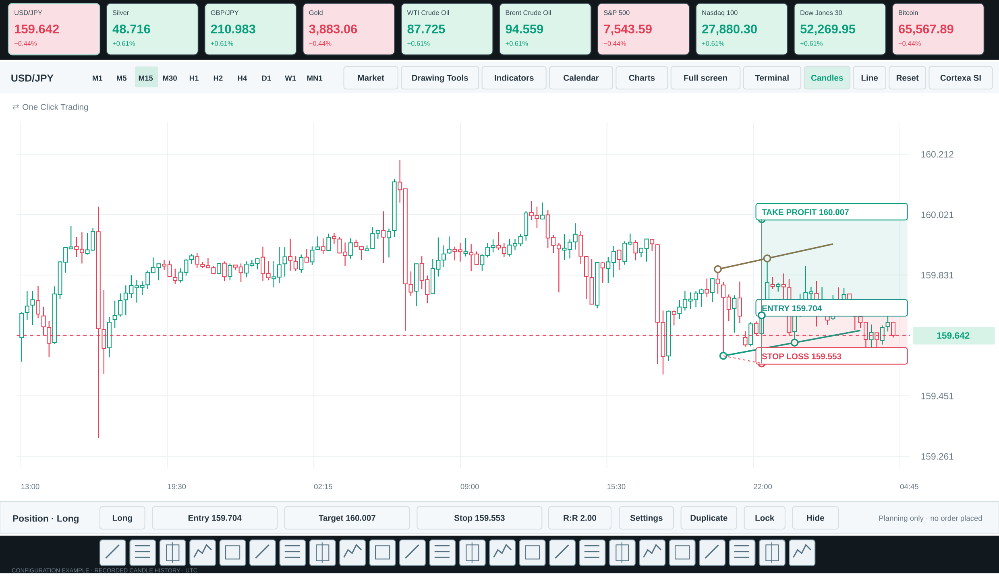
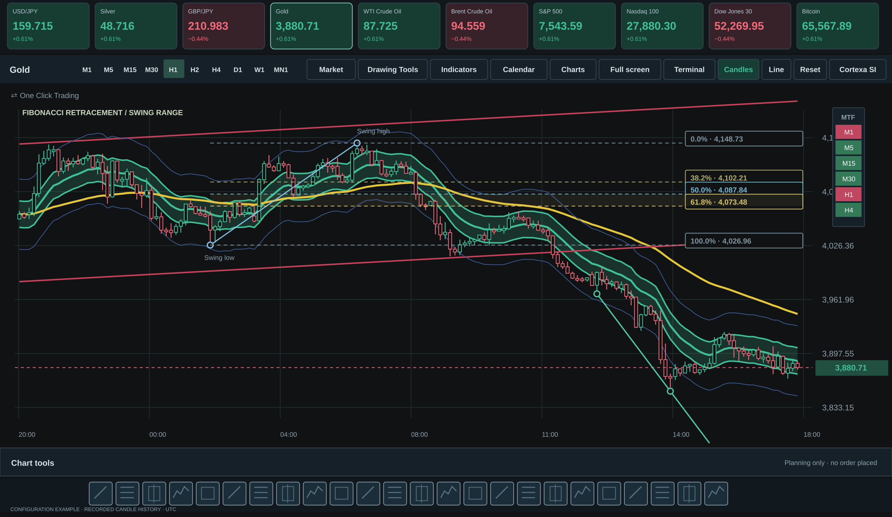
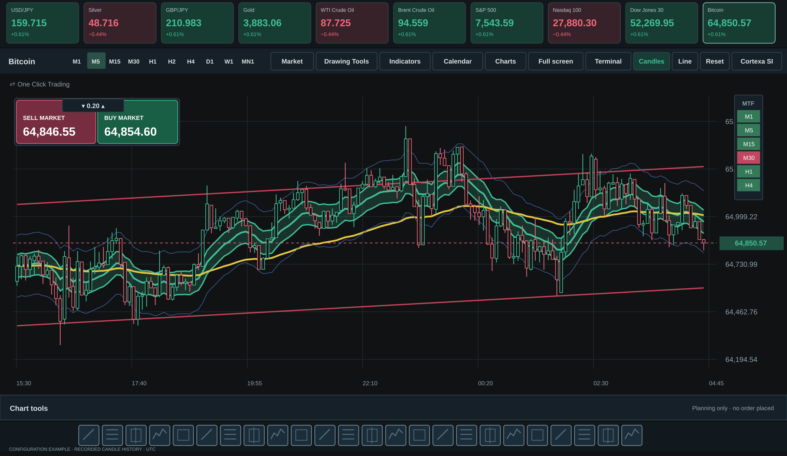

Room to see
what price is doing.
A generous chart with clear crosshairs, quick timeframe controls and collapsible panels. Keep the context. Lose the visual noise.
1m5m15m30m1h4h1D
A different perspective. One click away.
Meet Cortexa Super Intelligence, featuring our Heisenberg Confluence MTF engine. It brings multiple timeframes, sophisticated charts, built-in indicators, and trading signals together to help you identify potential opportunities and plan your next move.
Follow price. Check confluence. Draw your setup. Keep the market context close, without building your trading day around a dozen different windows.
A generous chart with clear crosshairs, quick timeframe controls and collapsible panels. Keep the context. Lose the visual noise.
Keep your chosen markets in view. Switch instruments from Market Watch and move straight into the chart you want to analyze.
VWAP AA, TRAMA, Bollinger Bands, RSI and more. Add the indicators you want, adjust inputs and styles, and keep only active tools on the toolbar.
Start with price alone. Add your drawings. Or bring confluence and indicators into the picture. See how the same workspace fits different ways of reading the market.

Choose a white background with hollow red and green candles. Connect one swing high to another, and one swing low to another. Keep entry, stop loss and take profit attached to the illustrated setup, while the candle history retains its natural pullbacks and uneven movement.
Connect separate swing points with trendlines. Map a retracement with Fibonacci levels. Bring price structure and your indicators into the same view.

Draw straight lines between separate peaks or separate lows.
Place Fibonacci levels across a selected swing.
Keep your indicator readings alongside the price action.
One chart can tell part of the story. Our Heisenberg Confluence MTF engine brings indicator readings across six timeframes into one clear panel, helping you see where conditions align before your next decision.
Spot bullish, bearish and mixed conditions. Combine that perspective with your own drawings, price levels and trading plan.
Explore the confluence setup ↗
Find the timeframe you’re watching, then check its current confluence reading.
Compare the other timeframes. Matching colors show agreement; mixed colors show conflicting conditions.
Historical screenshot. Readings can change; color alone is not an instruction to enter or hold a trade.Connect a supported trading account to Cortexa. Bring Heisenberg Confluence MTF, sophisticated charts, built-in indicators and trading signals into the way you analyze, plan and manage your trades.
Keep your account with your broker. Use Cortexa as your trading workspace—with live execution enabled through a supported, authorized connection.
See the trading workflow →Broker integrations are in development. Account connections and live execution depend on provider support and authorization.
Keep Sell, Buy and volume controls beside your analysis. Live orders require an enabled, authorized broker connection.
CPI. Jobs. Interest-rate decisions. Keep upcoming releases, forecasts and published results at your fingertips—right alongside your charts.
Stay on your chart. Keep your positions in view. Stay aware of what’s next. No switching between websites or losing your chart setup. Your charts, indicators, economic calendar and trading tools—all in one place.

Check a release without leaving your setup.
Open the calendar alongside the market you’re watching.
Compare the report’s actual result with its forecast and previous value.
Return to your analysis with your chart layout and tools still in place.
| Time | Event / Currency | Impact | Actual | Forecast | Previous |
|---|---|---|---|---|---|
| Tue | USD | High | 3.0% | 2.9% | 2.8% |
| Tue | USD | High | 8.0M | 8.1M | 8.2M |
| Wed | USD | High | — | 4.50% | 4.50% |
| Thu | EUR | High | — | 2.50% | 2.50% |
| Fri | USD | High | — | 180K | 155K |
| Fri | USD | Medium | — | 69.0 | 68.2 |
Measures changes in consumer prices. Traders watch the release for inflation pressures and how they may affect interest-rate expectations.
Compare the actual figure with the forecast and previous reading. A surprise can change market expectations; it does not guarantee price direction.
This is an interface demonstration, not a live economic schedule. In the connected workspace, release availability and timing depend on the calendar provider; results may arrive after the scheduled time.
Cortexa Super Intelligence is designed to put your selected chart, indicator readings and market context into a focused explanation. Less time piecing everything together. More context for your next decision.
Recognize the selected symbol, timeframe and enabled indicators.
Explain alignment, conflicting readings and conditional market scenarios in plain language.
Highlight relevant upcoming releases and explain what to watch before and after the event.
The current chart provides rule-based readings. Connected AI and calendar-aware analysis require the planned backend integration and testing.
In this example, price holds above VWAP while shorter timeframes lean bullish. The bearish 30-minute reading suggests the alignment is incomplete.
A scheduled Bank of Japan announcement could matter for the yen side of the pair. Wait for the published release; the calendar alone does not tell you the direction.
Holding above the recent range supports continuation. Losing that range weakens the setup. A release could change either scenario.
Keep your market, confluence readings and order controls in one view. Use the position-planning tool to map entry, stop loss and take profit, then choose your size in the one-click trading panel.
Order and broker/API connection shown as a design example. Live execution requires a supported, verified integration and account authorization. This preview cannot place trades.

Choose your ticker. Compare timeframes. Keep the markets you follow within reach.
Read Heisenberg confluence, add indicators or work with a clean chart and drawing tools.
Mark entry, stop-loss and take-profit levels. Check the event calendar before making your own trading decision.
Cortexa brings your selected markets into one workspace. Instruments, history and live coverage depend on the connected market feed and catalog; use Market Watch to see what is available.
Yes. Supported indicators have input and style controls. The toolbar shows the tools you activate rather than empty slots, with a limit of eight active indicators.
No. The calendar shows scheduled events and available results from its provider. Source delays, refresh intervals, revisions and events without numerical results all affect what appears.
The interface and rule-based demonstration are built. The existing Cortexa service still needs to be connected to verified server calculations and calendar evidence, then tested before connected analysis is enabled.
The landing-page order examples are illustrations. Live trading requires a supported broker/API integration, authorization and execution testing. Adding a broker name does not establish a live connection. Signals and analysis do not guarantee a trading outcome.
Sophisticated analysis. Intuitive design.
Trade with clarity.